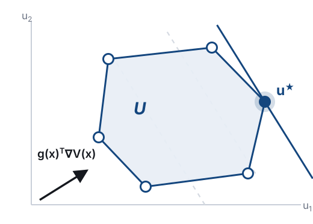

01Motivation
A CBF-QP safety filter keeps a robot inside the constraint set \(\mathcal C = \{x : c(x)\ge 0\}\) by modifying a nominal control input:
- Under input limits, valid CBFs are hard to design and often overly conservative.
- Grid-based HJ reachability is exact but scales exponentially with the state dimension.
- PDE-only neural CBFs tend to converge to trivial solutions.
02The maximal safe set
For dynamics \(\dot x = \phi(x,u) = f(x) + g(x)u\) with a convex input polytope \(\mathcal U\), the HJ safety value function
defines the maximal safe set \(\mathcal S = \{x : V(x) \ge 0\}\), the largest controlled invariant subset of \(\mathcal C\).
We learn a neural CBF \(V_\Theta\) whose safe set approximates \(\mathcal S\).03Neural CBF from the HJB equation
\(V_\Theta\) is trained on the stationary HJB variational inequality. The Hamiltonian is linear in \(u\), so its maximum is attained at a vertex of \(\mathcal U\):

04Network and training
The network is a non-negative residual of the constraint:
Training objective:
- \(\mathcal L_{\mathrm{PDE}}\): HJB residual on unlabelled states
- \(\mathcal L_{\mathrm{data}}\): regression on vertex-search labels
05Vertex-restricted control search
Labels come from a finite-horizon search over sequences of vertex controls:

- Beam search keeps the best \(B\) partial trajectories at each of the \(K\) steps.
- GPU-parallel over states, beams and vertices; no PDE solver is needed.
06Evaluation metrics
Predictions are checked with closed-loop rollouts:
- \(\rho_{\mathrm{FS}}\) false-safe: predicted safe, but the rollout leaves \(\mathcal C\)
- \(\rho_{\mathrm{FU}}\) false-unsafe: predicted unsafe, but the rollout stays safe
- \(\eta_{\mathrm{eff}}\) effective safe volume: share of states predicted and validated safe
07Better supervision data

08Recovering the maximal safe set

09Results on 15 systems
Effective safe volume \(\eta_{\mathrm{eff}}\) (mean of five seeds); (state, input) dimensions in brackets.
10Hardware experiments
- A mobile robot follows an MPC planner, and the learned CBF filters its controls in real time using live pedestrian detections.
- One or two pedestrians cross the robot's path in each trial; all 10 trials were collision-free.


11Conclusion
- Searching only over the vertices of \(\mathcal U\) provides effective supervision without a PDE solver.
- Limitations: no formal guarantees yet; the search cost grows with \(|\mathcal V|\) and \(K\).
- Future work: error guarantees, systems with many control vertices, and uncertain dynamics.